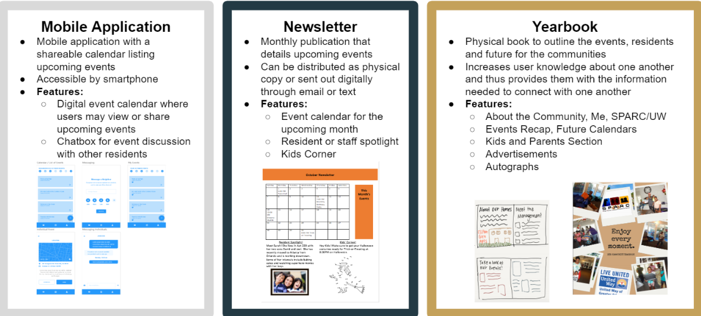

CS3750 & United Way of Atlanta: Project Connect

Together, nonprofits United Way (UW) of Atlanta and the Single Parent Alliance & Resource Center (SPARC) work to support at-risk single parents throughout Greater Atlanta. Under a new initiative known as New Neighborhood, UW and SPARC have provided living accommodations for two at-risk communities: Clifton Glen and Snapfinger Woods Apartments. However, both apartments have suffered a severe lack of social capital, where few residents communicate with each other or management; this issue has led to residential resentment towards management, low residential turnout at community events, and limited inter-community interaction.
To help address a lack of social capital among community residents and management, I researched and designed alternatives to create a prototype of an accessible digital and physical community book. Meanwhile, I consistently gathered feedback and conducted usability testing with UW and SPARC clients to develop a robust solution to the lack of social capital.

A charitable organization focused on community well-being and growth, United Way (UW) of Atlanta has partnered with the Single Parent Alliance & Resource Center (SPARC) to develop the New Neighborhood initiative, a program dedicated to offering housing and aid to single parents. Currently, locations at Clifton Glen and Snapfinger Woods Apartments serve as the first two pilot locations for this initiative.
At both locations, a majority of single-parent residents support one or more children. Partnering UW and SPARC representatives frequent the apartments to offer family-friendly events and informational workshops for parents. Local management provides upkeeping services as needed.
Despite the simultaneous existence of the residents and residential overseers, a lack of communication and networking--social capital--prevents the establishment of a truly social and sustainable community. Residents rarely communicate with one another or management, a recurring trend that limits community welfare and maintenance. Past efforts of emails, handouts, and newsletters have had low efficacy.
Problem Space:
- Disconnected residents do not know each other
- Residents are unaware of available resources
- No open communication channels exist to share resources

Data Collection
To better understand the lifestyle and needs of our clients, I conducted on-site interviews at Snapfinger Woods Apartments, where a SPARC-led event was held then. Consequently, I was able to collect, examine, and analyze some pamphlets regarding current New Neighborhood Programs. There, I spoke with SPARC staff members and single parents and conducted a semi-structured interview. I asked questions like the following:
- What are New Neighborhood's long-term goals?
- How does SPARC facilitates the management and growth of Snapfinger Woods?
- What do residents want to see in the near future?
In addition, I also conducted a structured interview with United Way affiliates to better understand the social climate of both single parent communities. Similarly, United Way offers online statistics that document the quality of impoverished communities throughout Atlanta; my team reviewed this statistical data to gauge the well-being of these communities.
Lastly, I created and sent out surveys asking residents how they obtain SPARC information, what technology they use, and what programs they wish to see in the future. From all of this information, I learned the following:
| Strategy | Type | Takeaways |
|---|---|---|
| Interviews | Qualitative, Semi-structured | Trust is one of the most important parts of sustained relationships among residents |
| In-person conversations | Qualitative | Shift in focus towards red zone communities |
| Observational visits | Qualitative | Residents desire a sustainable community, child well-being, and career development opportunities |
| Surveys | Quantitative, Closed questions | Average household age of 32 years |
| Pamphlets and presentations | Qualitative and Quantitative | Engaging attendees at past events has been successful, but with low turnout at times |
Defining Our Users and Their Needs
As I continued to consider our residents' needs, I defined our design constraints. I identified areas such as variation in resident resources and privileges and potentially unrepresentative survey results as design constraints. Nonetheless, using the knowledge I had gained through previous data collection and defining constraints, I realized our primary areas of focus: homeless, education, health, and income. Thereafter, we defined our users and their goals to better cater a product suited for these single parents.
| Primary User: Guardian | Secondary User: Child | Tertiary User: SPARC/UW Management |
|---|---|---|
| Lacks financial stability | Lives in rampant poverty | Physically present at communities to offer assistance |
| Affected by high unemployment | Affected by low school graduation rates | Source of support for guardians and children |
| Average age of 32 | Often raised by single parent alone | Provides developmental workshops, tutoring, and career resources |
Narrowing Down Our Users' Goals
- Relay information about past and upcoming events
- Open channels of communication between SPARC/UW management with residents by providing contact information
- Instill a sense of community

The beginning of my idea generation began with listing key functional and non-functional design requirements. For example, we determined the following functional requirements for our artifact: 1) ability to access to information, 2) ability to share information, 3) and community inclusivity. I understood these as important components to the product because of the evident need for greater community-building and career-development; my team hoped that by focusing on social exchanges, we could help the community bond and grow together. We also identified the following non-functional requirements: 1) memorability, 2) usability, 3) security/privacy, 4) structural integrity. I believed that artifact we produced must offer lasting impact that also ensured security and familiarity, especially among families. Thus, we began to envision a product that could offer content regarding community, events, and information for both adults and their kids.
I then considered a variety of different design alternatives and narrowed down my team's possible user interface to the following three choices:
Click to view in a new tab
Thereafter, we deliberately chose which user interface to pursue based off of two types of criteria. The first evaluated the three user interfaces based off of social factors and non-functional requirements such as cost of implementation, innovation, management involvement, sustainability, and others; the second evaluated was based off of functional-requirements that included accessibility, learnability, user experience, and navigability. Finally, I chose to pursue both a digital and physical yearbook. This decision was inspired by the type of content and capabilities of a yearbook. That is, a yearbook often offers large emotional sentiment, a feature that may build social capital. Additionally, a yearbook offers opportunity for large community involvement (a way to disseminate information or post public queries) that may insinuate sustainability, requires limited production and management costs (above a mobile application), and because of present digital and physical variations, gives residents with technological barriers accessible opportunities to view resources.

Throughout the process, I maintained secure communication with the officials and affiliates of United Way and SPARC. I also continued to reference previous data and referred to the data collected from my interviews with on-site residents to ensure that throughout the design and prototyping process, empathy was instilled ❤.

My team and I first created a low fidelity prototype using adhesive sticky notes. In this low-fi prototype, each page represented a potential page of the yearbook. I also annotated the page for placement of potential pictures, text, links, and other information. After we developed a general vision for our product, we transferred the lo-fi prototype into a high fidelity prototype. Although there were large similarities between the digital and physical yearbooks, in the digital yearbooks, features such as hyperlinks and videos were implemented. In contrast, the physical yearbook offered more drawable activities for children as well as perforated coupon clippings.

Given new user feedback, my team and I implemented key navigational changes to both the physical and digital community yearbooks. First, I added a hyperlinked table of contents to the digital yearbook, where residents could look at all the features in the book on the first page and click on any section for redirection. Second, I added a "return to table of contents" button to each page so that users could easily return to an overview of the yearbook. Lastly, a traditional table of contents was similarly added to the physical yearbook. Moreover, more social media links and references were added throughout pages that featured community members to ensure easier ways of reaching out to others. Our changes were focused on usability and sentimentality. After these changes were added, I submitted both formats to our professor for heuristic evaluation.

At the conclusion of the CS3750 course, I considered the other ways that our project could grow. That is, I considered the use of heuristic evaluation and participatory design in this project. I particularly noted the value of participatory design in this project, given that this project was intended for such a specific use by these residents.
Collaboration with Ndeyanta Jallow '19, Mahati Vavilala '18, Alena Nichols '18
← Go back to my Portfolio